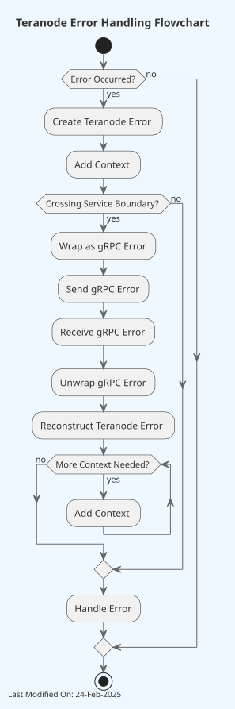

Error Handling¶
Index¶
- Introduction
- Error Handling in Teranode
1. Introduction¶
1.1. Go Errors¶
In Go (Golang), error handling is managed through an interface called error. This interface is defined in the built-in errors package.
The error interface in Go is defined as follows:
Any type that implements this Error() string method satisfies the error interface. This "convention over configuration" approach encourages Go programs to handle errors explicitly by checking whether an error is nil before proceeding with normal operations.
Custom error types can be created by defining types that implement the error interface. This is useful for conveying error context or state beyond just a text message. Here’s a simple example:
type MyError struct {
Msg string
File string
Line int
}
func (e *MyError) Error() string {
return fmt.Sprintf("%s:%d: %s", e.File, e.Line, e.Msg)
}
Functions that can result in an error typically return an error object as their last return value. The calling function should always check this error before proceeding.
result, err := someFunction()
if err != nil {
// handle error
log.Fatal(err)
}
// proceed with using result
This pattern encourages handling errors at the place they occur, rather than propagating them up the stack implicitly via exceptions.
1.2. Go Errors: Best Practices¶
- Always check for errors where they might occur. Do not ignore returned error values or propagate them up.
- Consider defining your custom error types for complex systems, which can add clarity and control in error handling.
- Use standard
errors.Is(to check for a specific errors) anderrors.As(to check for type compatibility and type assertion). - Parsing the text of an error message to determine the type or cause of an error is considered an anti-pattern. Instead, use custom error types or error wrapping to provide context.
1.3. Sentinel Errors¶
Sentinel errors in Go are predefined error variables that represent specific error conditions. These are declared at the package level and used consistently throughout the code to signify particular states or outcomes. This pattern is useful for comparing returned errors to known values, providing a consistent method for error checking.
Since sentinel errors are variables, they can easily be compared using errors.Is() to check if a particular error has occurred.
Using sentinel errors keeps error handling simple and explicit, requiring only basic checks against predefined values.
Here's a basic example of defining and using sentinel errors in a Go program:
package main
import (
"errors"
"fmt"
)
// Define sentinel errors
var (
ErrNotFound = errors.New("not found")
ErrPermissionDenied = errors.New("permission denied")
)
func findItem(id string) error {
// Simulated condition: item not found
if id != "expected_id" {
return ErrNotFound
}
return nil
}
func main() {
err := findItem("unknown_id")
if errors.Is(err, ErrNotFound) {
fmt.Println("Item not found!")
} else if errors.Is(err, ErrPermissionDenied) {
fmt.Println("Access denied.")
} else if err != nil {
fmt.Println("An unexpected error occurred:", err)
} else {
fmt.Println("Item found.")
}
}
While useful, sentinel errors have limitations, especially as applications scale. Code that uses sentinel errors is tightly coupled to these errors, making changes to error definitions potentially disruptive.
1.4 Wrapping Errors¶
In Go, error wrapping is a technique used to add additional context to an error while preserving the original error itself. This approach helps maintain a "chain" of errors, which can be useful for debugging and error handling in complex microservices.
Example of wrapping an error:
package main
import (
"errors"
"fmt"
)
func operation1() error {
return errors.New("base error")
}
func operation2() error {
err := operation1()
if err != nil {
// Wrap the error with additional context
return fmt.Errorf("operation2 failed: %w", err)
}
return nil
}
func main() {
err := operation2()
if err != nil {
fmt.Println("An error occurred:", err)
}
}
On the other hand, unwrapping is the process of retrieving the original error from a wrapped error. You can unwrap errors manually using the Unwrap method provided by the errors package, or you can use higher-level utilities like errors.Is and errors.As to check for specific errors or extract errors of specific types.
In this context, errors.Is and errors.As are used to check errors in an error chain without needing to manually call Unwrap repeatedly
errors.Is: checks whether any error in the chain matches a specific error.errors.As: finds the first error in the chain that matches a specific type and provides access to it.
Benefits of Wrapping Errors:
- Wrapping errors helps in preserving the context where an error occurred, without losing information about the original error.
- Maintaining an error chain aids in diagnosing issues by providing a traceable path of what went wrong and where.
- Allows developers to decide how much error information to expose to different parts of the application or to the end user, enhancing security and usability.
2. Error Handling in Teranode¶
2.1. Error Handling Strategy¶
Teranode follows a structured error handling strategy that combines the use of predefined error types, error wrapping, and consistent error creation patterns. This approach ensures clear, consistent, and traceable error handling throughout the application.

The errors/errors.go file contains the core error type definition and functions for creating, wrapping, and unwrapping errors. The errors/Error_types.go file defines specific error types and provides functions for creating these errors. Additional functionality is provided in errors/error_utils.go and errors/Error_data.go.
An error in Teranode is defined as a struct with unexported fields to encapsulate error details, including stack trace information:
type Error struct {
code ERR // Error code from the ERR enum
message string // Human-readable error message
file string // Source file where error was created
line int // Line number where error was created
function string // Function name where error was created
wrappedErr error // Optional wrapped error for error chains
data ErrDataI // Optional structured error data
}
The ERR type is an enum defined in the error.proto file, providing a standardized set of error codes across the system. The unexported fields ensure that errors are created through the provided constructor functions, and the file/line/function fields enable detailed stack trace information for debugging.
Teranode emphasizes the use of specific error creation functions for different error types. These functions are defined in Error_types.go and follow a naming convention of New<ErrorType>Error. For example:
func NewStorageError(message string, params ...interface{}) error {
return New(ERR_STORAGE_ERROR, message, params...)
}
These functions automatically handle error wrapping when an existing error is passed as the last parameter. They also support sprintf-style formatting for the error message. For instance:
This approach allows for consistent error creation, automatic error wrapping, and formatted error messages, enhancing the overall error handling strategy in Teranode.
2.2. Sentinel Errors in Teranode¶
Sentinel errors are predefined errors that serve as fixed references for common error conditions. They provide a standard and efficient way to recognize and manage common specific error scenarios.
Code Example:
The sentinel errors are defined in the errors/Error_types.go file, along with corresponding functions to create these errors:
package errors
var (
ErrUnknown = New(ERR_UNKNOWN, "unknown error")
ErrInvalidArgument = New(ERR_INVALID_ARGUMENT, "invalid argument")
ErrThresholdExceeded = New(ERR_THRESHOLD_EXCEEDED, "threshold exceeded")
ErrNotFound = New(ERR_NOT_FOUND, "not found")
// Other sentinel errors follow...
)
func NewUnknownError(message string, params ...interface{}) error {
return New(ERR_UNKNOWN, message, params...)
}
func NewInvalidArgumentError(message string, params ...interface{}) error {
return New(ERR_INVALID_ARGUMENT, message, params...)
}
func NewThresholdExceededError(message string, params ...interface{}) error {
return New(ERR_THRESHOLD_EXCEEDED, message, params...)
}
func NewNotFoundError(message string, params ...interface{}) error {
return New(ERR_NOT_FOUND, message, params...)
}
// Other error creation functions follow...
Each sentinel error is created using the New function, ensuring that each error has a unique code and a succinct message. The new error creation functions allow for more flexible error creation with custom messages and automatic error wrapping.
The sentinel errors are useful for error comparisons and decision-making in the Teranode business logic. By comparing returned errors to these predefined values, functions can determine the next steps without ambiguity.
How to Use Example:
When a function encounters an error, it can use the new error creation functions. Here's an example of how a function might use these errors:
package main
import (
"fmt"
"github.com/bsv-blockchain/teranode/errors" // Import Teranode's custom errors package
)
// Data represents a simple data structure
type Data struct {
ID string
}
// fetchData simulates fetching data and returning different types of errors
func fetchData(id string) (*Data, error) {
if id == "" {
return nil, errors.NewInvalidArgumentError("empty ID provided")
}
if id == "notfound" {
return nil, errors.NewNotFoundError("data not found for ID: %s", id)
}
// Simulate a wrapped error
if id == "dberror" {
dbErr := fmt.Errorf("database connection failed")
return nil, errors.NewStorageError("failed to fetch data", dbErr)
}
return &Data{ID: id}, nil
}
func main() {
// Example usage
ids := []string{"", "notfound", "dberror", "validid"}
for _, id := range ids {
data, err := fetchData(id)
if err != nil {
// Use errors.Is to check for specific error types
if errors.Is(err, errors.ErrInvalidArgument) {
fmt.Printf("Invalid argument error: %v\n", err)
} else if errors.Is(err, errors.ErrNotFound) {
fmt.Printf("Not found error: %v\n", err)
} else if errors.Is(err, errors.ErrStorageError) {
fmt.Printf("Storage error: %v\n", err)
// Use errors.As to get more details about the error
var storageErr *errors.Error
if errors.As(err, &storageErr) {
fmt.Printf("Storage error details - Code: %v, Message: %s\n",
storageErr.Code, storageErr.Message)
if storageErr.WrappedErr != nil {
fmt.Printf("Wrapped error: %v\n", storageErr.WrappedErr)
}
}
} else {
fmt.Printf("Unknown error: %v\n", err)
}
} else {
fmt.Printf("Data fetched successfully: %v\n", data)
}
fmt.Println()
}
}
2.3. Error Wrapping in Teranode¶
Error wrapping in Teranode enables the creation of nested errors and their propagation through different layers of the application. This mechanism allows an error to carry its history along with new context, effectively creating a chain of errors that leads back to the original issue.
By maintaining a trail of errors, developers can trace back through the execution flow to understand what led to the error. Additionally, different layers of the application can decide how to handle errors based on their type and origin.
Error Creation and Wrapping¶
The New function in Teranode's error package creates and returns a pointer to an Error struct, which includes fields for the error code, a message, file/line/function information, and an optional wrapped error.
func New(code ERR, message string, params ...interface{}) *Error {
var wErr *Error
// Extract the wrapped error, if present
if len(params) > 0 {
lastParam := params[len(params)-1]
switch err := lastParam.(type) {
case *Error:
// Wrap Teranode error directly
wErr = err
params = params[:len(params)-1]
case error:
// Convert any error to Teranode error
wErr = &Error{message: err.Error()}
params = params[:len(params)-1]
}
}
// Format the message with the remaining parameters
if len(params) > 0 {
err := fmt.Errorf(message, params...)
message = err.Error()
}
// Capture stack trace information
pc, file, line, _ := runtime.Caller(2)
fn := runtime.FuncForPC(pc)
parts := strings.Split(fn.Name(), "/")
// Check if the code exists in the ERR enum
if _, ok := ERR_name[int32(code)]; !ok {
returnErr := &Error{
code: code,
message: "invalid error code",
file: file,
line: line,
function: parts[len(parts)-1],
}
if wErr != nil && wErr != returnErr && !wErr.contains(returnErr) {
returnErr.wrappedErr = wErr
}
return returnErr
}
returnErr := &Error{
code: code,
message: message,
file: file,
line: line,
function: parts[len(parts)-1],
}
// Only wrap if wErr exists and won't create a cycle
if wErr != nil && wErr != returnErr && !wErr.contains(returnErr) {
returnErr.wrappedErr = wErr
}
return returnErr
}
The New function operates as follows:
-
It takes an error code, a message, and a variadic
paramsslice which may include formatting parameters and optionally one error to be wrapped. -
If the last parameter in
paramsis an error of ANY type, it's treated as the error to be wrapped:- If it's a
*Error(Teranode error), it's wrapped directly - If it's any other
errortype, it's converted to a Teranode error first
- If it's a
-
Any additional parameters are used to format the message string using
fmt.Errorf, allowing for dynamic message content based on runtime values. -
Stack trace information (file, line, function) is automatically captured using
runtime.Caller. -
The function includes circular reference prevention using the
contains()method to avoid infinite error chains.
Here's a practical example of using the New function to create and wrap errors:
func someOperation() error {
err := doSomethingThatMightFail()
if err != nil {
// Wrap the error with additional context
// Note: Use the error CODE (ERR_INVALID_ARGUMENT), not the sentinel error
return New(ERR_INVALID_ARGUMENT, "operation failed: %s", err.Error(), err)
}
return nil
}
func anotherOperation() error {
// You can also use the type-specific constructor functions
dbErr := someDatabase Query()
if dbErr != nil {
// This automatically handles error wrapping
return NewStorageError("failed to query database", dbErr)
}
return nil
}
In these scenarios, the functions wrap errors returned by other functions with additional context. The New function can wrap both Teranode errors and standard Go errors, automatically converting standard errors to Teranode's error type.
Unwrapping Errors¶
The Unwrap method in the Error structure returns the error that was wrapped within the current error, if any:
This method allows the use of Go's built-in errors.Unwrap function to continue unwrapping through multiple layers of nested wrapped errors.
To effectively utilize the unwrapping functionality, developers can use a loop or a conditional check to explore the chain of errors. Here's an example that demonstrates how to use the Unwrap method to trace back through wrapped errors:
// Assuming `someOperation` returns an error that may be wrapped multiple times
err := someOperation()
for err != nil {
fmt.Printf("Error encountered: %v\n", err)
// Attempt to unwrap the error
if unwrappedErr := errors.Unwrap(err); unwrappedErr != nil {
err = unwrappedErr
} else {
break
}
}
In this example, errors.Unwrap is used in a loop to keep unwrapping the error until no more wrapped errors are found, effectively reaching the original error. This approach is particularly useful when diagnosing an issue and understanding the sequence of errors that led to the final state.
Circular Error Prevention¶
Teranode's error system includes automatic circular reference detection to prevent infinite error chains. The contains() method checks if adding an error would create a cycle before wrapping:
func (e *Error) contains(target *Error) bool {
// Builds a set of all errors in e's chain
// Checks if any error in target's chain exists in e's chain
// Returns true if a cycle would be created
}
This is automatically invoked by:
New()when wrapping errors during error creationSetWrappedErr()when manually setting wrapped errorsJoin()when combining multiple errors
What this prevents:
err1 := NewError("error 1")
err2 := NewStorageError("error 2", err1)
err3 := NewNetworkError("error 3", err2)
// This would create a cycle if not prevented:
err1.SetWrappedErr(err3) // Silently ignored - cycle detected
The circular detection traverses both error chains and prevents wrapping if:
- The error would wrap itself
- The wrapped error already contains the current error
- Adding the error would create any cycle in the chain
This ensures error chains remain acyclic and can be safely traversed without infinite loops.
Best Practices for Error Wrapping¶
- Unwrap errors only when necessary. For example, when handling specific error types differently, unwrap errors until finding the type you're looking for.
- Always log or monitor the full error chain before unwrapping in production environments to preserve the context and details of what went wrong.
- Use error wrapping to add context at each layer of the application, making it easier to trace the flow of execution that led to an error.
- When wrapping errors, include relevant information that might help in debugging, but be cautious not to include sensitive data.
- Let the automatic circular reference detection handle cycle prevention - don't try to manually check for cycles.
- Prefer wrapping errors at layer boundaries (e.g., when transitioning from storage to service layer) rather than wrapping at every function call.
2.4. gRPC Error Wrapping in Teranode¶
As a distributed system utilizing gRPC, Teranode implements a robust mechanism for wrapping and unwrapping errors to ensure consistent error handling practices when errors cross service boundaries.
Converting Teranode Errors to gRPC Errors¶
The WrapGRPC function in errors.go is responsible for converting Teranode's custom error types into gRPC-compatible errors. This function serializes the entire error chain with all wrapped errors, data, and stack trace information.
Key Implementation Details:
func WrapGRPC(err error) error {
if err == nil {
return nil
}
var castedErr *Error
if errors.As(err, &castedErr) {
// Check if already wrapped - avoid double wrapping
if castedErr.wrappedErr != nil {
if _, ok := status.FromError(castedErr.wrappedErr); ok {
return err // Already wrapped, skip further wrapping
}
}
var wrappedErrDetails []protoadapt.MessageV1
// Serialize the main error with data and stack trace
var details protoadapt.MessageV1
if castedErr.data != nil {
details, _ = anypb.New(&TError{
Code: castedErr.code,
Message: castedErr.message,
Data: castedErr.data.EncodeErrorData(), // Include error data
File: castedErr.file, // Stack trace info
Line: int32(castedErr.line),
Function: castedErr.function,
})
} else {
details, _ = anypb.New(&TError{
Code: castedErr.code,
Message: castedErr.message,
File: castedErr.file,
Line: int32(castedErr.line),
Function: castedErr.function,
})
}
wrappedErrDetails = append(wrappedErrDetails, details)
// Iterate through ALL wrapped errors in the chain
if castedErr.wrappedErr != nil {
currWrappedErr := castedErr.wrappedErr
for currWrappedErr != nil {
var err *Error
if errors.As(currWrappedErr, &err) {
// Serialize each wrapped error with its data and stack trace
details, _ := anypb.New(&TError{
Code: err.code,
Message: err.message,
Data: err.data.EncodeErrorData(), // if data exists
File: err.file,
Line: int32(err.line),
Function: err.function,
})
wrappedErrDetails = append(wrappedErrDetails, details)
currWrappedErr = err.wrappedErr
}
}
}
// Create gRPC status with ALL details
st := status.New(ErrorCodeToGRPCCode(castedErr.code), castedErr.message)
st, _ = st.WithDetails(wrappedErrDetails...)
return st.Err()
}
// For non-Teranode errors, wrap as unknown
return status.New(codes.Internal, err.Error()).Err()
}
The WrapGRPC function:
- Checks for nil and returns early if no error
- Prevents double-wrapping by checking if the wrapped error is already a gRPC status
- Serializes the main error including code, message, data (if present), and stack trace info (file/line/function)
- Iterates through the entire wrapped error chain, serializing each error with its full context
- Attaches all error details to a single gRPC status message
- Maps error codes using
ErrorCodeToGRPCCode()for the top-level gRPC status code - Handles non-Teranode errors by wrapping them with
codes.Internal
This comprehensive serialization ensures that when an error crosses a gRPC boundary, all contextual information—including the complete error chain, typed error data, and stack traces—is preserved and transmitted to the receiving service.
Converting gRPC Errors back to Teranode Errors¶
When a Teranode service receives a gRPC error, it needs to convert it back into an internal error format. The UnwrapGRPC function in errors.go reconstructs the complete error chain including all wrapped errors, data, and stack trace information.
Key Implementation Details:
func UnwrapGRPC(err error) *Error {
if err == nil {
return nil
}
// Check if it's a gRPC status error
st, ok := status.FromError(err)
if !ok {
return &Error{
code: ERR_ERROR,
message: "error unwrapping gRPC details",
wrappedErr: err,
}
}
if len(st.Details()) == 0 {
return &Error{
code: ERR_ERROR,
message: err.Error(),
}
}
var prevErr, currErr *Error
// Iterate through details in REVERSE order to reconstruct chain
for i := len(st.Details()) - 1; i >= 0; i-- {
detail := st.Details()[i]
detailAny, ok := detail.(*anypb.Any)
if !ok {
continue // Skip if not the expected type
}
var customDetails TError
if err = anypb.UnmarshalTo(detailAny, &customDetails, proto.UnmarshalOptions{}); err == nil {
// Create error with code and message
currErr = New(customDetails.Code, customDetails.Message)
// Restore error data if present
if customDetails.Data != nil {
data, errorGettingData := GetErrorData(customDetails.Code, customDetails.Data)
if errorGettingData != nil {
currErr.data = nil // Could not deserialize data
} else {
currErr.data = data
}
}
// Restore stack trace information
currErr.file = customDetails.File
currErr.line = int(customDetails.Line)
currErr.function = customDetails.Function
// Link to previously reconstructed error (builds chain from bottom up)
if prevErr != nil {
currErr.wrappedErr = prevErr
}
prevErr = currErr
}
}
return currErr // Returns the top-level error with full chain
}
The UnwrapGRPC function:
-
Validates the error is a gRPC status error
-
Extracts all error details from the gRPC status
-
Iterates in reverse order (bottom-up) to properly reconstruct the error chain
-
For each detail:
- Unmarshals the
TErrorprotobuf message - Creates a new
Errorwith the code and message - Deserializes error data using
GetErrorData()if present - Restores stack trace info (file, line, function)
- Links to the previous error to rebuild the wrapped error chain
- Unmarshals the
-
Returns the top-level error with the complete reconstructed chain
This process allows Teranode to fully reconstruct its internal error types from gRPC errors, preserving:
- All error codes and messages
- The complete error chain (all wrapped errors)
- Typed error data (e.g.,
UtxoSpentErrData) - Stack trace information for each error in the chain
The reverse iteration ensures that wrapped errors are properly linked, maintaining the same error hierarchy that existed before gRPC transmission.
Practical Example¶
Here's an end-to-end example of how gRPC error wrapping and unwrapping works in Teranode:
-
In the Blockchain Server, when processing a
GetBlockrequest: -
In the Blockchain Client, when handling the response:
In this example, if an error occurs in the server, it's wrapped as a gRPC error before being sent to the client. The client then unwraps the gRPC error, allowing it to handle the error as a standard Teranode error.
gRPC Error Wrapping Best Practices¶
- Maintain a clear mapping between Teranode error codes and gRPC status codes to ensure error meanings are preserved across service boundaries.
- Always wrap errors before sending them across gRPC boundaries, and unwrap them when receiving.
- Include relevant error details when wrapping, but be cautious about including sensitive information.
- Handle unwrapping errors gracefully, accounting for the possibility that the received error might not be a properly wrapped Teranode error.
2.5. Extra Data in Error Handling¶
Teranode's error handling system includes a feature for attaching additional contextual information to errors. This is implemented through the data field in the Error struct.
Error Structure¶
The data field in the Error struct is of type ErrDataI, which is an interface defined in Error_data.go:
// ErrDataI is an interface for error data that can be set, retrieved, and encoded.
type ErrDataI interface {
EncodeErrorData() []byte // Encode data for transmission over gRPC
Error() string // String representation of the data
GetData(key string) interface{} // Retrieve value by key
SetData(key string, value interface{}) // Set value by key
}
Teranode provides a generic implementation using a map:
// ErrData is a generic error data structure that implements the ErrDataI interface.
type ErrData map[string]interface{}
This design provides two approaches for error data:
- Generic Key-Value Data: Use the built-in
ErrDatamap type for simple key-value pairs - Custom Typed Data: Implement
ErrDataIfor domain-specific structured error data (e.g.,UtxoSpentErrData)
The EncodeErrorData() method serializes the data to JSON bytes for transmission over gRPC, while GetData/SetData provide a convenient API for accessing the data programmatically.
Purpose and Usage¶
The data field serves two main purposes:
- It allows attaching additional structured contextual information or payload to the error
- It enables type assertions for more specific error handling
Wrapped Errors vs Error Data:
Understanding when to use wrapped errors versus error data is important for clear error handling:
Use Wrapped Errors when:
- You want to preserve the causal chain of what went wrong (error A caused error B)
- You're adding context at different layers of the application (network → service → storage)
- You want to maintain the full error history for debugging
- You need to check if a specific error type occurred anywhere in the chain using
errors.Is()
Example:
dbErr := database.Query() // Original error from database
if dbErr != nil {
// Wrap to show this happened during user retrieval
return NewStorageError("failed to retrieve user", dbErr)
}
Use Error Data when:
- You need to attach domain-specific structured information to an error
- The information is metadata about the error, not a cause of it
- You want to include specific identifiers, timestamps, or state information
- You need typed access to error details for programmatic handling
Example:
// UTXO spent error needs specific transaction hashes and timing
err := NewUtxoSpentErr(utxoHash, spendingTxHash, spentTime, nil)
// Now error.data contains UtxoSpentErrData with typed fields
// Later, extract and use the data:
var spentData *UtxoSpentErrData
if errors.AsData(err, &spentData) {
log.Info("UTXO already spent",
"utxo", spentData.Hash,
"by_tx", spentData.SpendingTxHash,
"at", spentData.Time)
}
You can use both together:
// Wrap a database error AND attach domain-specific data
dbErr := database.Query()
err := NewUtxoSpentErr(utxoHash, spendingTxHash, time.Now(), dbErr)
// Now err.wrappedErr = dbErr AND err.data = UtxoSpentErrData
This is distinct from wrapped errors, which are used for error chaining and preserving the error stack.
Example Implementation¶
Here's an example of how to use the Data field:
type UtxoSpentErrData struct {
Hash chainhash.Hash
SpendingTxHash chainhash.Hash
Time time.Time
}
func (e *UtxoSpentErrData) Error() string {
return fmt.Sprintf("utxo %s already spent by %s at %s", e.Hash, e.SpendingTxHash, e.Time)
}
func NewUtxoSpentErr(txID chainhash.Hash, spendingTxID chainhash.Hash, t time.Time, err error) *Error {
// Create a new error
e := New(ERR_TX_ALREADY_EXISTS, "utxoSpentErrStruct.Error()", err)
// Create the extra data
utxoSpentErrStruct := &UtxoSpentErrData{
Hash: txID,
SpendingTxHash: spendingTxID,
Time: t,
}
// Attach the data to the error
e.Data = utxoSpentErrStruct
return e
}
In this example:
UtxoSpentErrDatais a custom struct that implements theErrDatainterface.NewUtxoSpentErrcreates a newErrorwith a sentinel codeERR_TX_ALREADY_EXISTS.- It then creates a
UtxoSpentErrDatastruct with specific transaction details. - Finally, it attaches this struct to the
Datafield of the error.
Type Assertions with Extra Data¶
The Data field is also used in the errors.As method for error type assertions:
func (e *Error) As(target interface{}) bool {
// ...
// check if Data matches the target type
if e.Data != nil {
if data, ok := e.Data.(error); ok {
return errors.As(data, target)
}
}
// ...
}
This implementation allows for type assertions on the Data field, enabling more specific error handling based on the extra data attached to the error.
Usage Example¶
Here's how you might use this in practice:
baseErr := New(ERR_ERROR, "invalid tx error")
utxoSpentError := NewUtxoSpentErr(chainhash.Hash{}, chainhash.Hash{}, time.Now(), baseErr)
var spentErr *UtxoSpentErrData
if errors.As(utxoSpentError, &spentErr) {
// Handle the specific UTXO spent error
fmt.Printf("UTXO %s was spent by %s at %s\n", spentErr.Hash, spentErr.SpendingTxHash, spentErr.Time)
} else {
// Handle other types of errors
fmt.Println("An error occurred:", utxoSpentError)
}
In this example, errors.As is used to check if the error contains UtxoSpentErrData. If it does, you can access the specific details of the UTXO spent error.
Extra Data Best Practices¶
- Use the
datafield to attach structured, relevant information to errors when additional context is needed beyond the error message. - Implement the
ErrDataIinterface for custom error data structures to ensure compatibility with Teranode's error system and gRPC serialization. - Utilize
errors.Asorerrors.AsDatafor type assertions when handling errors, to access specific error data when available. - For simple key-value data, use the generic
ErrDatamap type rather than creating custom implementations. - When creating custom error data types, ensure the
EncodeErrorData()method properly serializes all necessary fields to JSON.
2.6. Error Protobuf¶
Teranode uses Protocol Buffers (protobuf) to define a standardized structure for error messages. This approach ensures consistency in error handling across different services within the Teranode ecosystem.
Error Protocol Definition¶
The error.proto file defines the structure of error messages using the Protocol Buffers language. Here is the actual definition:
syntax = "proto3";
option go_package = "github.com/bsv-blockchain/teranode/errors";
package errors;
// TError represents a Teranode error with full context
message TError {
ERR code = 1; // Error code from the ERR enum
string message = 2; // Human-readable error message
bytes data = 3; // Optional structured error data (JSON-encoded)
TError wrappedError = 4; // Nested wrapped error (recursive structure)
string file = 5; // Source file where error was created
int32 line = 6; // Line number where error was created
string function = 7; // Function name where error was created
}
// ERR enumerates all possible error codes in Teranode
// Error codes are grouped by category in ranges of 10
enum ERR {
// General errors 0-9
UNKNOWN = 0;
INVALID_ARGUMENT = 1;
THRESHOLD_EXCEEDED = 2;
NOT_FOUND = 3;
PROCESSING = 4;
CONFIGURATION = 5;
CONTEXT = 6;
CONTEXT_CANCELED = 7;
EXTERNAL = 8;
ERROR = 9;
// Block errors 10-19
BLOCK_NOT_FOUND = 10;
BLOCK_INVALID = 11;
BLOCK_EXISTS = 12;
// ... (additional error codes organized by category)
// Transaction errors 30-49
// Service errors 50-59
// Storage errors 60-69
// UTXO errors 70-79
// Kafka errors 80-89
// Blob errors 90-99
// State errors 100-109
// Network errors 110-119
}
Key Components¶
-
TError Message: This defines the structure of a Teranode error with seven fields:
code: An error code from the ERR enum indicating the error typemessage: A string describing the error in human-readable formatdata: Optional binary data (JSON-encoded) containing structured error contextwrappedError: A nested TError message representing the wrapped error (supports recursive error chains)file: Source file path where the error was created (for stack traces)line: Line number where the error was createdfunction: Function name where the error was created
The recursive
wrappedErrorfield allows for complete error chain serialization across gRPC boundaries, preserving the entire error stack with full context at each level. -
ERR Enum: This enumerates all possible error codes in Teranode. Error codes are organized into logical ranges of 10 by category (e.g., 10-19 for block errors, 30-49 for transaction errors), making the error categorization immediately apparent from the code value. Each error type is assigned a unique integer value, enabling standardized error handling across different services and programming languages.
Purpose and Benefits¶
-
Standardization: By defining error structures in protobuf, Teranode ensures that all services use a consistent error format.
-
Language Agnostic: Protobuf definitions can be compiled into multiple programming languages, allowing services written in different languages to communicate using the same error structure.
-
Versioning: Protobuf supports versioning, making it easier to evolve the error structure over time without breaking backward compatibility.
-
Efficiency: Protobuf messages are serialized into a compact binary format, which is more efficient for network transmission compared to text-based formats like JSON.
Integration with Teranode's Error Handling¶
The generated Go code is integrated with Teranode's error handling system. For example, in the WrapGRPC function:
func WrapGRPC(err error) error {
// ...
details, _ := anypb.New(&TError{
Code: uErr.Code,
Message: uErr.Message,
})
// ...
}
Here, TError is the generated struct from the protobuf definition, used to create a gRPC error with standardized details.
Error Protobuf Best Practices¶
- Keep the
error.protofile updated as new error types are introduced or existing ones are modified. - Ensure that all services use the latest version of the compiled protobuf definitions.
- When adding new fields to the
TErrormessage, use new field numbers to maintain backward compatibility. - Document the meaning and appropriate use of each error code in the
ERRenum. - Follow the error code range conventions (10s for blocks, 30s-40s for transactions, etc.) when adding new error codes.
2.7. Error Utility Functions¶
Teranode provides several utility functions in error_utils.go for categorizing and handling errors based on their characteristics.
Error Classification Functions¶
IsRetryableError(err error) bool¶
Determines if an error represents a transient condition that may succeed if retried:
if errors.IsRetryableError(err) {
// Retry the operation with exponential backoff
time.Sleep(backoffDuration)
return retry(operation)
}
Retryable errors include:
ERR_NETWORK_TIMEOUTERR_NETWORK_ERRORERR_SERVICE_UNAVAILABLEERR_STORAGE_UNAVAILABLEERR_NETWORK_CONNECTION_REFUSED
Note: Context cancellation and deadline exceeded errors are NOT retryable.
IsNetworkError(err error) bool¶
Identifies network-related errors by checking error codes and common network error patterns:
if errors.IsNetworkError(err) {
log.Warn("Network error encountered", "error", err)
metrics.IncrementNetworkErrors()
}
IsMaliciousResponseError(err error) bool¶
Detects errors that indicate potentially malicious peer behavior:
if errors.IsMaliciousResponseError(err) {
peerManager.BanPeer(peerID, "Malicious behavior detected")
return errors.NewNetworkPeerMaliciousError("peer sent invalid data", err)
}
IsTemporaryError(err error) bool¶
Checks if an error implements the Temporary() interface or has error codes indicating temporary conditions:
IsContextError(err error) bool¶
Identifies context cancellation or deadline exceeded errors:
Error Categorization¶
GetErrorCategory(err error) string¶
Returns a category string based on error code ranges, useful for logging and metrics:
category := errors.GetErrorCategory(err)
metrics.IncrementErrorsByCategory(category)
// Returns one of: "context", "malicious", "network", "temporary",
// "block", "subtree", "transaction", "service", "storage", "utxo",
// "kafka", "blob", "state", or "unknown"
Error categories are determined by error code ranges:
- 0-9: General errors
- 10-19: Block errors
- 20-29: Subtree errors
- 30-49: Transaction errors
- 50-59: Service errors
- 60-69: Storage errors
- 70-79: UTXO errors
- 80-89: Kafka errors
- 90-99: Blob errors
- 100-109: State errors
- 110-119: Network errors
Additional Utility Functions¶
Join(errs ...error) error¶
Combines multiple errors into a single error. If the first error is a Teranode *Error, subsequent errors are chained as wrapped errors:
err1 := doOperation1()
err2 := doOperation2()
err3 := doOperation3()
if err1 != nil || err2 != nil || err3 != nil {
return errors.Join(err1, err2, err3)
}
AsData(err error, target interface{}) bool¶
Attempts to extract error data from an error or its wrapped errors:
var utxoData *UtxoSpentErrData
if errors.AsData(err, &utxoData) {
log.Info("UTXO was spent", "tx", utxoData.SpendingTxHash, "time", utxoData.Time)
}
RemoveInvalidUTF8(s string) string¶
Sanitizes error messages by removing invalid UTF-8 characters before transmission:
This function is automatically used internally when wrapping errors for gRPC transmission.
ErrorCodeToGRPCCode Mapping¶
The ErrorCodeToGRPCCode function maps Teranode error codes to gRPC status codes:
func ErrorCodeToGRPCCode(code ERR) codes.Code {
switch code {
case ERR_UNKNOWN:
return codes.Unknown
case ERR_INVALID_ARGUMENT:
return codes.InvalidArgument
case ERR_THRESHOLD_EXCEEDED:
return codes.ResourceExhausted
default:
return codes.Internal
}
}
Note: Most error codes currently map to codes.Internal. This mapping can be extended as needed for more specific gRPC status code requirements.
2.8. Stack Traces and Formatting¶
Teranode's error system automatically captures stack trace information when errors are created, enabling detailed debugging without manual stack trace management.
Automatic Stack Trace Capture¶
When an error is created using New() or any New*Error() function, the following information is automatically captured:
pc, file, line, _ := runtime.Caller(2) // Skip 2 frames to get actual caller
fn := runtime.FuncForPC(pc)
This populates the file, line, and function fields of the Error struct, providing context about where the error originated.
Format Method¶
The Format() method implements fmt.Formatter, allowing custom formatting of errors based on the format verb used:
Basic formatting (default):
fmt.Printf("%v", err) // ERR_STORAGE_ERROR (69): failed to store block -> ERR_NETWORK_TIMEOUT (113): connection timeout
Detailed formatting with stack trace:
fmt.Printf("%+v", err) // Shows error message plus full stack trace
// Output:
// ERR_STORAGE_ERROR (69): failed to store block -> ERR_NETWORK_TIMEOUT (113): connection timeout
// - github.com/bsv-blockchain/teranode/stores/storage/storeBlock() /path/to/storage.go:142 [69] failed to store block
// - github.com/bsv-blockchain/teranode/network/sendRequest() /path/to/network.go:88 [113] connection timeout
Go-syntax representation:
Example usage in logging:
if err != nil {
log.Error("Operation failed", "error", fmt.Sprintf("%+v", err))
// Logs the full error chain with stack trace information
}
Stack Trace Structure¶
The stack trace shows the error chain in reverse order (most recent first), with each level showing:
- Function name (full package path)
- File path
- Line number
- Error code
- Error message
This provides a complete execution path that led to the error without requiring additional debugging tools.
Best Practices for Stack Traces¶
- Use
%+vor%#vformat when logging errors to get full context - Use
%vfor user-facing error messages (hides implementation details) - Stack traces are automatically included in gRPC error transmission
- Each wrapped error in the chain maintains its own stack frame
- Circular error detection prevents infinite loops in stack trace generation
2.9. Unit Tests¶
Extensive unit tests are available under the errors package, including:
errors_test.go: Tests for core Error type and methodserror_types_test.go: Tests for sentinel errors and constructor functionserror_data_test.go: Tests for ErrDataI interface and implementationserror_utils_test.go: Tests for utility functionserror_data_utxo_spent_test.go: Tests for specific error data types
Should you add any new functionality or scenario, it is recommended to update the unit tests to ensure that the error handling logic remains consistent and reliable.